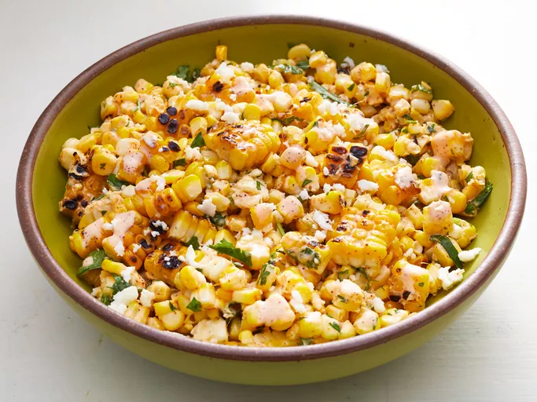

Elote Salad

Description
This elote salad is a refreshing and flavorful dish that combines the best
of Mexican street corn with a creamy and tangy dressing. It's a perfect
dish for a summer barbecue or a light meal on a hot day.
Ingredients
- 6 ears corn in the husk
-
Chile-Lime Mayonnaise:
- 1/2 cup mayonnaise
- 1 lime, juiced
- 1 teaspoon hot sauce
- 1/2 teaspoon mild chile powder
- 1/4 teaspoon smoked paprika
- 1/2 cup crumbled Cotija cheese
- 1/2 cup coarsely chopped cilantro
- 3 scallions, sliced
Steps
- Gather the ingredients.
- Soak corn in cold water for at least 1 hour.
-
Mix mayonnaise, lime juice, hot sauce, chile powder, and paprika
together in a bowl. Refrigerate the chile-lime mayonnaise.
-
Preheat an outdoor grill for medium heat and lightly oil the grate.
Drain the corn and grill away from the heat source for 15 to 20 minutes.
-
Let the corn cool until it can be easily handled. Shuck the corn and
return it to the grill; cook over the heat source until lightly charred,
3 to 5 minutes. Remove and let cool.
- Cut the kernels off the cob.
-
Combine corn kernels, Cotija cheese, cilantro, and scallions in a large
bowl.
- Fold in the chile-lime mayonnaise.